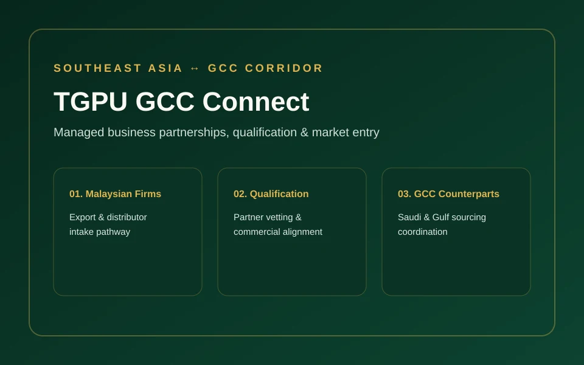
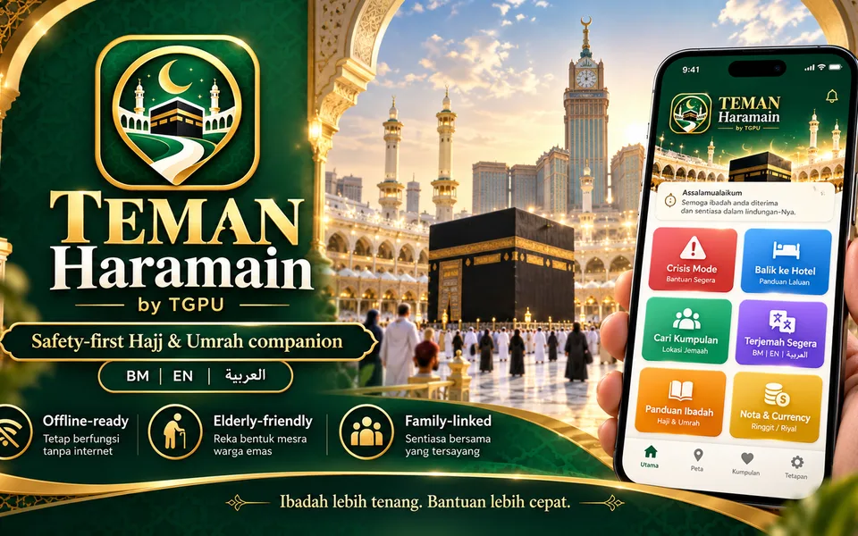
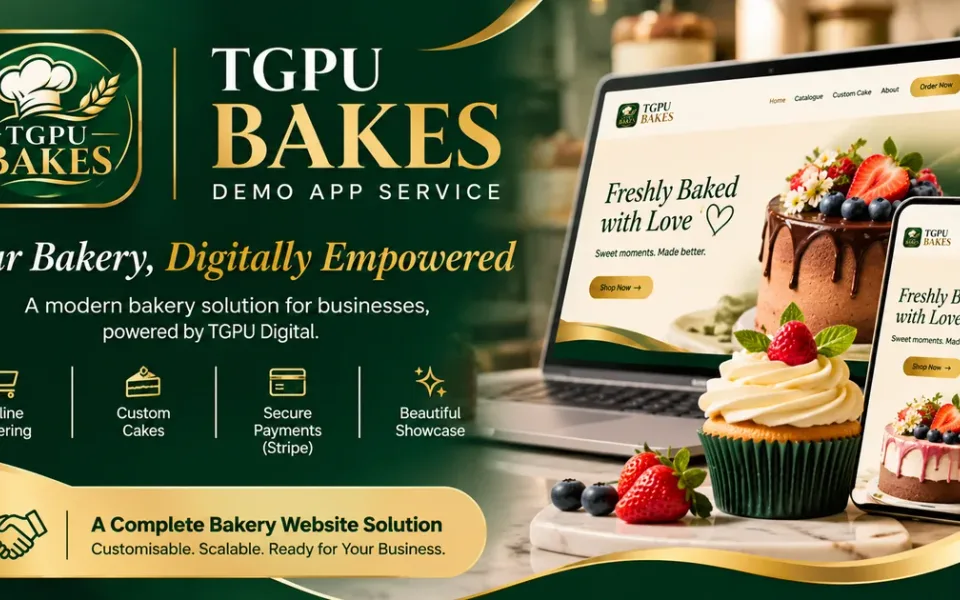
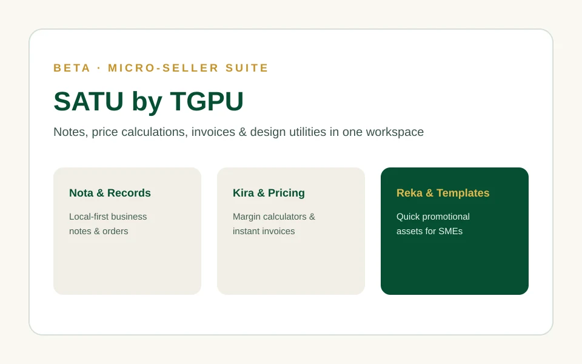

TGPU Legacy
Teras korporat Malaysia bagi Tok Guru Pulau Ubi Legacy yang mengurus tadbir urus jenama, kerjasama strategik, dan kesinambungan ekosistem.
TGPU Legacy ialah ibu pejabat korporat Malaysia bagi Tok Guru Pulau Ubi Legacy—menghubungkan Asia Tenggara dan negara GCC melalui khidmat nasihat perniagaan rentas sempadan, produk digital praktikal, dan inovasi teknologi yang berdisiplin.


Tentang TGPU Legacy
TGPU ialah singkatan bagi Tok Guru Pulau Ubi, menghargai legasi keilmuan dan khidmat masyarakat arwah datuk kepada pengasas kami, Muhammad Mamduh Saffin di Tumpat, Kelantan. Hari ini, Tok Guru Pulau Ubi Legacy beroperasi dari Malaysia sebagai perniagaan berdaftar yang membangunkan teknologi bertanggungjawab dan laluan komersial rentas sempadan.
Bukan sekadar portfolio peribadi, TGPU Legacy bertindak sebagai teras korporat yang menyatukan khidmat nasihat kemasukan pasaran, prasarana pendidikan awam, serta platform perisian khusus mengikut sektor di bawah tadbir urus yang jelas.
Ekosistem Korporat
Setiap domain berkhidmat untuk audiens tertentu—memisahkan sumber pendidikan awam, khidmat nasihat komersial, ruang kerja dalaman, dan direktori perisian.
Teras korporat Malaysia bagi Tok Guru Pulau Ubi Legacy yang mengurus tadbir urus jenama, kerjasama strategik, dan kesinambungan ekosistem.
Khidmat nasihat strategik Malaysia–GCC yang bebas bagi kemasukan pasaran Arab Saudi dan Teluk, pengesahan pengedar, serta penyumberan OEM/ODM Malaysia.
Persekitaran operasi dalaman berautentikasi untuk aplikasi TGPU Digital, digandingkan dengan direktori aplikasi awam kami.
Bahagian kejuruteraan dan direktori aplikasi awam yang membangunkan perisian praktikal dalam perdagangan, pendidikan, perjalanan, dan operasi komuniti.
Pratonton asas awam yang menghimpunkan GCC Connect, MatchOS, Healthcare, TEMAN Haramain, Optic, dan Bakes. (os.tgpu.tech belum dihalakan secara umum.)
Ruang kerja penyelarasan komersial berhad akses bagi menyokong aliran kerja nasihat Malaysia–GCC dan saringan rakan niaga.
Hab pendidikan percuma berasaskan sumber rasmi untuk membantu perniagaan Malaysia menilai kesediaan memasuki pasaran Arab Saudi dan GCC.
Pasaran GCC & Tiga Tonggak
Menggabungkan penguasaan bahasa Arab, pemahaman rantaian bekalan Malaysia, dan pelaksanaan tersusun merentas Asia Tenggara dan Teluk.

Penyelidikan pasaran berstruktur, penyaringan pembeli dan pengedar, serta penyelarasan penyumberan OEM/ODM Malaysia antara Kuala Lumpur, Riyadh, dan GCC.
Platform perisian khusus merangkumi operasi runcit, klinik optik, kedai bakeri, aliran kerja kesihatan, dan pengurusan komuniti.
Platform pembelajaran berbilang bahasa dan kerjasama rentas sempadan yang dibina atas bukti, skop telus, dan tanpa dakwaan berlebihan.
Portfolio Produk Digital
Tapis mengikut bidang dan semak status pelaksanaan, pautan langsung, serta tahap keluaran semasa—tanpa statistik rekaan.

Laluan terurus bagi penyaringan perniagaan dan pengesahan rakan niaga yang menghubungkan syarikat Asia Tenggara dengan rakan di GCC.

Padanan peluang komersial terurus untuk keperluan pengedar, pembeli, penyumberan, dan OEM/ODM antara Malaysia dan GCC.

Pendamping Haji dan Umrah mesra warga emas yang sedia luar talian dengan panduan perjalanan dan keselamatan dalam BM, Arab, dan Inggeris.

Demonstrasi perisian perniagaan optik berbilang bahasa merangkumi katalog produk, spesifikasi kanta, dan penjadualan janji temu.

Ruang kerja runcit pintar untuk kedai runcit dan peniaga mengimbas produk, mengurus inventori, serta merekod jualan harian.

Demonstrasi kedai bakeri interaktif dengan katalog produk, troli pesanan, dan aliran pertanyaan kek tempahan khas.

Demonstrasi pengurusan kejiranan kediaman untuk menyelaraskan pengumuman komuniti, penglibatan penduduk, dan kemudahan bersama.

Pratonton operasi kesihatan patuh tadbir urus yang memaparkan pendaftaran klinik, daftar masuk pesakit, dan serahan tugas penjaga.

Suite utiliti perniagaan tempatan yang menggabungkan nota, kiraan harga, invois, dan rekaan promosi ringkas untuk peniaga mikro.
Teknologi & Inovasi
Diterajui TGPU Innovator Labs, seni bina teknikal kami mengutamakan penghantaran edge yang pantas, aplikasi web luar talian, dan kesetaraan tiga bahasa LTR/RTL.
Aplikasi dan laman korporat dibina di atas prasarana statik dan tanpa pelayan yang ringan dalam had kos yang mampan.
Setiap platform utama direka dari asas untuk Bahasa Inggeris, Bahasa Melayu, dan Bahasa Arab—lengkap dengan susun atur kanan-ke-kiri dan tipografi Noto Kufi Arabic.
Alat lapangan seperti TEMAN Haramain dan SATU kekal responsif walaupun pada capaian mudah alih yang terhad ketika perjalanan.
Aliran kerja berbantu AI seperti Muthabbit dan pratonton klinik dibina dengan semakan sumber yang jelas, sempadan keselamatan, dan pengawasan manusia.
Pengasas & Kepimpinan
Pengasas · TGPU Legacy, TGPU Gulf Advisory & TGPU Digital Ecosystem
Muhammad Mamduh Saffin menerajui TGPU Legacy dari Malaysia, menggabungkan pengajian pascasiswazah dalam Pengajian Bahasa Arab di Universiti Islam Antarabangsa Malaysia (UIAM) dengan kejuruteraan produk dan penyelarasan komersial Malaysia–GCC.
Berbekalkan pemahaman langsung mengenai budaya komunikasi Arab Saudi dan Teluk serta landskap PKS dan pendidikan Malaysia, beliau menyelia kedua-dua khidmat nasihat pasaran di bawah TGPU Gulf Advisory dan perisian manfaat awam di bawah TGPU Digital Ecosystem.
Kerjasama & Hubungan Pelabur
Kami bekerjasama secara selektif dengan pengeksport, pengedar serantau, institusi pendidikan, dan rakan teknologi yang mengutamakan tadbir urus telus.
Jelaskan matlamat komersial, kesediaan produk, atau objektif teknologi anda merentas Malaysia, Asia Tenggara, dan GCC.
Nilai keperluan kawal selia, bahasa, dan kesesuaian pasaran menggunakan sumber rasmi sebelum melaburkan modal atau stok.
Laksanakan di bawah skop jelas, pencapaian terukur, dan tanggungjawab operasi yang telus—sama ada dalam khidmat nasihat atau perisian.
TGPU Legacy mengekalkan kerjasama pendidikan dan rentas sempadan yang aktif berasaskan piawaian bersama, bukan sekadar logo hiasan.
TGPU Legacy beroperasi sebagai perniagaan berdaftar Malaysia (SSM 202603149563 / 003857959-A) dengan pertumbuhan organik berdisiplin tanpa hutang luaran.
Hubungi Kami
Hubungi TGPU Legacy berkenaan kemasukan pasaran Malaysia–GCC, kerjasama perisian perusahaan, atau perkongsian korporat.